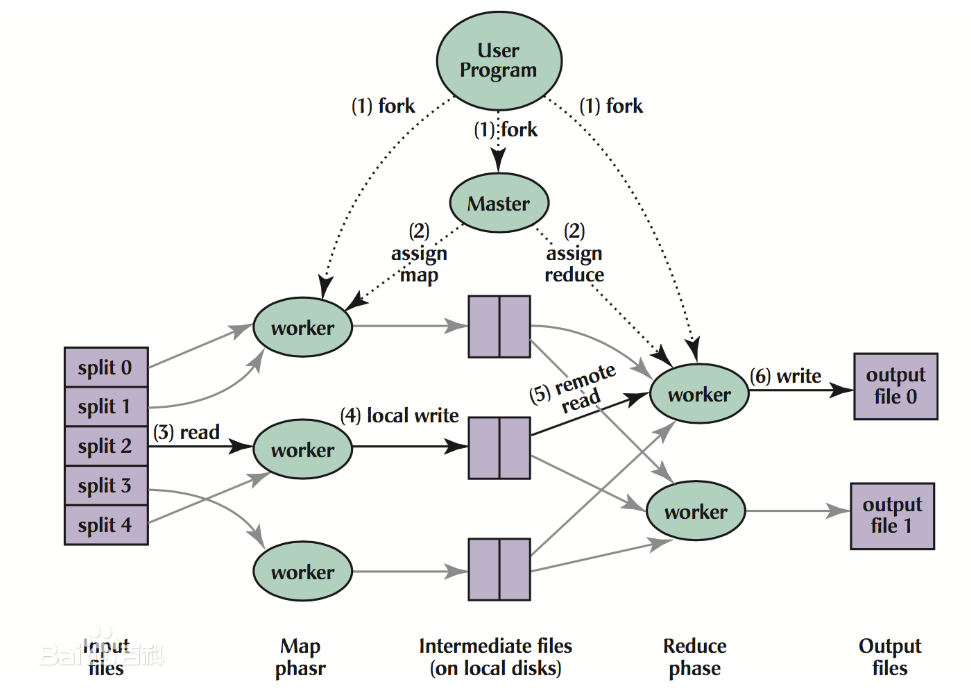

前言
看看分布式
第一步就是看这个论文
背景
在 20 世纪初，包括本文作者在内的 Google 的很多程序员，为了处理海量的原始数据，已经实现了数以百计的、专用的计算方法。这些计算方法用来处理大量的原始数据，比如，文档抓取（类似网络爬虫的程序）、Web 请求日志等等；也为了计算处理各种类型的衍生数据，比如倒排索引、Web 文档的图结构的各种表示形势、每台主机上网络爬虫抓取的页面数量的汇总、每天被请求的最多的查询的集合等等。
相关问题
大多数以上提到的数据处理运算在概念上很容易理解。然而由于输入的数据量巨大，因此要想在可接受的时间内完成运算，只有将这些计算分布在成百上千的主机上。如何处理并行计算、如何分发数据、如何处理错误？所有这些问题综合在一起，需要大量的代码处理，因此也使得原本简单的运算变得难以处理。
模型
为了解决上述复杂的问题，本文设计一个新的抽象模型，使用这个抽象模型，用户只要表述想要执行的简单运算即可，而不必关心并行计算、容错、数据分布、负载均衡等复杂的细节，这些问题都被封装在了一个库里面：利用一个输入 key/value pair 集合来产生一个输出的 key/value pair 集合。
- 用户自定义的 Map 函数接受一个输入的 key/value pair 值，然后产生一个中间 key/value pair 值的集合。MapReduce 库把所有具有相同中间 key 值 I 的中间 value 值集合在一起后传递给 reduce 函数。
- 用户自定义的 Reduce 函数接受一个中间 key 的值 I 和相关的一个 value 值的集合。Reduce 函数合并这些 value 值，形成一个较小的 value 值的集合。一般的，每次 Reduce 函数调用只产生 0 或 1 个输出 value 值。通常 Map 通过一个迭代器把中间 value 值提供给 Reduce 函数，这样 Reduce Worker 就可以处理无法全部放入内存中的大量的 value 值的集合
在概念上，用户定义的 Map 和 Reduce 函数都有相关联的类型：
map(k1,v1) ->list(k2,v2)
reduce(k2,list(v2)) ->list(v2)执行流程
通过将 Map 调用的输入数据自动分割为 M 个数据片段的集合，Map 调用被分布到多台机器上执行。输入的数据片段能够在不同的机器上并行处理。使用分区函数将 Map 调用产生的中间 key 值分成 R 个不同分区（例如，hash(key) mod R），Reduce 调用也被分布到多台机器上执行。分区数量（R）和分区函数由用户来指定。

- 用户程序首先调用的 MapReduce 库将输入文件分成 M 个数据片度，每个数据片段的大小一般从 16MB 到 64MB（可以通过可选的参数来控制每个数据片段的大小）。然后用户程序在机群中创建大量的程序副本。
- 这些程序副本中的有一个特殊的程序–master。副本中其它的程序都是 worker 程序，由 master 分配任务。有 M 个 Map 任务和 R 个 Reduce 任务将被分配，master 将一个 Map 任务或 Reduce 任务分配给一个空闲的 worker。
- 被分配了 map 任务的 worker 程序读取相关的输入数据片段，从输入的数据片段中解析出 key/value pair，然后把 key/value pair 传递给用户自定义的 Map 函数，由 Map 函数生成并输出的中间 key/value pair，并缓存在内存中
- 缓存中的 key/value pair 通过分区函数分成 R 个区域，之后周期性的写入到本地磁盘上。缓存的 key/value pair 在本地磁盘上的存储位置将被回传给 master，由 master 负责把这些存储位置再传送给 Reduce worker
- 当 Reduce worker 程序接收到 master 程序发来的数据存储位置信息后，使用 RPC 从 Map worker 所在主机的磁盘上读取这些缓存数据。当 Reduce worker 读取了所有的中间数据后，通过对 key 进行排序后使得具有相同 key 值的数据聚合在一起。由于许多不同的 key 值会映射到相同的 Reduce 任务上，因此必须进行排序。如果中间数据太大无法在内存中完成排序，那么就要在外部进行排序。
- Reduce worker 程序遍历排序后的中间数据，对于每一个唯一的中间 key 值，Reduce worker 程序将这个 key 值和它相关的中间 value 值的集合传递给用户自定义的 Reduce 函数。Reduce 函数的输出被追加到所属分区的输出文件。
- 当所有的 Map 和 Reduce 任务都完成之后，master 唤醒用户程序。在这个时候，在用户程序里的对 MapReduce 调用才返回。
容错
worker 故障
master 与 worker 之间同步心跳，对于失效的 worker，根据其类型来做进一步处理：
- Map worker 故障：由于 Map 任务将数据临时存储在本地，所以需要重新执行。
- Reduce worker 故障：由于 Reduce 任务将数据存储在全局文件系统中 ，所以不需要重新执行。
master 故障
MapReduce 任务重新执行
故障语义保证
当用户提供的 Map 和 Reduce 操作是输入确定性函数（即相同的输入产生相同的输出）时，MapReduce 的分布式实现在任何情况下的输出都和所有程序没有出现任何错误、顺序的执行产生的输出是一样的。
- Map worker 任务的原子提交：每个 Map 任务生成 R 个本地临时文件，当一个 Map 任务完成时，worker 发送一个包含 R 个临时文件名的完成消息给 master。如果 master 从一个已经完成的 Map 任务再次接收到一个完成消息，master 将忽略这个消息；
- Reduce worker 任务的原子提交：当 Reduce 任务完成时，Reduce worker 进程以原子的方式把临时文件重命名为最终的输出文件。如果同一个 Reduce 任务在多台机器上执行，针对同一个最终的输出文件将有多个重命名操作执行。MapReduce 依赖底层文件系统提供的重命名操作的原子性来保证最终的文件系统状态仅仅包含一个 Reduce 任务产生的数据。
存储位置
核心思想：本地读文件以减少流量消耗
MapReduce 的 master 在调度 Map 任务时会考虑输入文件的位置信息，尽量将一个 Map 任务调度在包含相关输入数据拷贝的机器上执行；如果上述努力失败了，master 将尝试在保存有输入数据拷贝的机器附近的机器上执行 Map 任务（例如，分配到一个和包含输入数据的机器在一个交换机里的 worker 机器上执行）。
任务粒度
理想情况下，M 和 R 应当比集群中 worker 的机器数量要多得多。在每台 worker 机器都执行大量的不同任务能够提高集群的动态的负载均衡能力，并且能够加快故障恢复的速度：失效机器上执行的大量 Map 任务都可以分布到所有其他的 worker 机器上去执行。
实际使用时建议用户选择合适的 M 值，以使得每一个独立任务都是处理大约 16M 到 64M 的输入数据（这样，上面描写的输入数据本地存储优化策略才最有效），另外，也建议把 R 值设置使用的 worker 机器数量的小倍数。比如：M=200000，R=5000，使用 2000 台 worker 机器。
备用任务
影响一个 MapReduce 的总执行时间最通常的因素是“落伍者”：在运算过程中，如果有一台机器花了很长的时间才完成最后几个 Map 或 Reduce 任务，导致 MapReduce 操作总的执行时间超过预期。
为了解决落伍者的问题，当一个 MapReduce 操作接近完成的时候，master 调度备用（backup）任务进程来执行剩下的、处于处理中状态（in-progress）的任务。无论是最初的执行进程、还是备用（backup）任务进程完成了任务，MapReduce 都把这个任务标记成为已经完成。此个机制通常只会占用比正常操作多几个百分点的计算资源。但能减少近 50% 的任务完成总时间